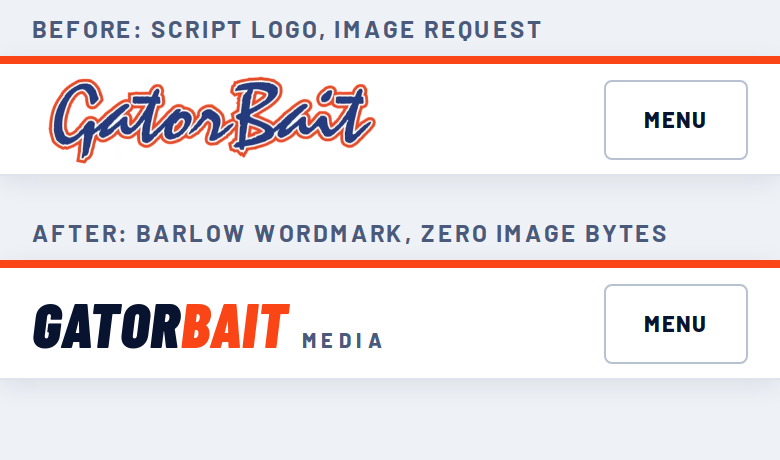

Nothing here is applied to the live site. Prototype is a local stub of the phone header in embed fdc2127a. Brenden OK'd a different logo look. Barlow only; orange #fa4616 and navy #08132f.

Replace the image markup (appears twice in the file: header and drawer) and add the CSS from logo-stub.html (.gbm-ms-wm).
old: <a class="gbm-ms-logo" href="/"><img src="'+L+'" alt="GatorBait Media"></a> new: <a class="gbm-ms-logo is-wm" href="/" aria-label="GatorBait Media home"><span class="gbm-ms-wm" aria-hidden="true">Gator<b>Bait</b><small>Media</small></span></a>
Also drop the var L='...' constant. Rollback: re-PATCH rev 90 text.
old: <img width="900" height="241" src="https://static.wixstatic.com/media/d3cfa5_95dd8a25863b4556b7ba6398fcfd0316~mv2.webp" alt="GatorBait Media"> new: <img width="900" height="241" loading="lazy" decoding="async" src="https://static.wixstatic.com/media/d3cfa5_95dd8a25863b4556b7ba6398fcfd0316~mv2.webp/v1/fill/w_500,h_134,al_c,q_85,enc_auto/gatorbait.webp" alt="GatorBait Media">
The feed hands back /v1/fit/w_1000,h_880,al_c,q_80/file.png, which Wix serves as a 1.74 MB PNG. Re-cut it as the repo already did in sports-live/src/front-page.js (wixCut).
old: function photo(p, eager) { return p.image ? '<img src="' + esc(p.image) + '" alt="' + esc(p.alt) + '" loading="' + (eager ? 'eager' : 'lazy') + '" decoding="async"' + (eager ? ' fetchpriority="high"' : '') + '>' : ''; }
new: function wc(s, w) { var m = /^(https:\/\/static\.wixstatic\.com\/media\/[^\/?#]+)(?:\/v1\/[^?#]*)?$/.exec(String(s || '')); return m ? m[1] + '/v1/fit/w_' + w + ',h_' + Math.round(w * 2 / 3) + ',al_c,q_80,enc_auto/gatorbait.jpg' : s; }
function photo(p, eager) { return p.image ? '<img src="' + esc(wc(p.image, 800)) + '" srcset="' + esc(wc(p.image, 480)) + ' 480w, ' + esc(wc(p.image, 800)) + ' 800w, ' + esc(wc(p.image, 1200)) + ' 1200w" sizes="(max-width: 700px) 100vw, 60vw" alt="' + esc(p.alt) + '" loading="' + (eager ? 'eager' : 'lazy') + '" decoding="async"' + (eager ? ' fetchpriority="high"' : '') + '>' : ''; }
Patches 2 and 3 together add 488 characters: 14,469 becomes 14,957, under the 15,000 limit (checked). Fingerprint check and ESSENTIAL category re-send apply as usual.